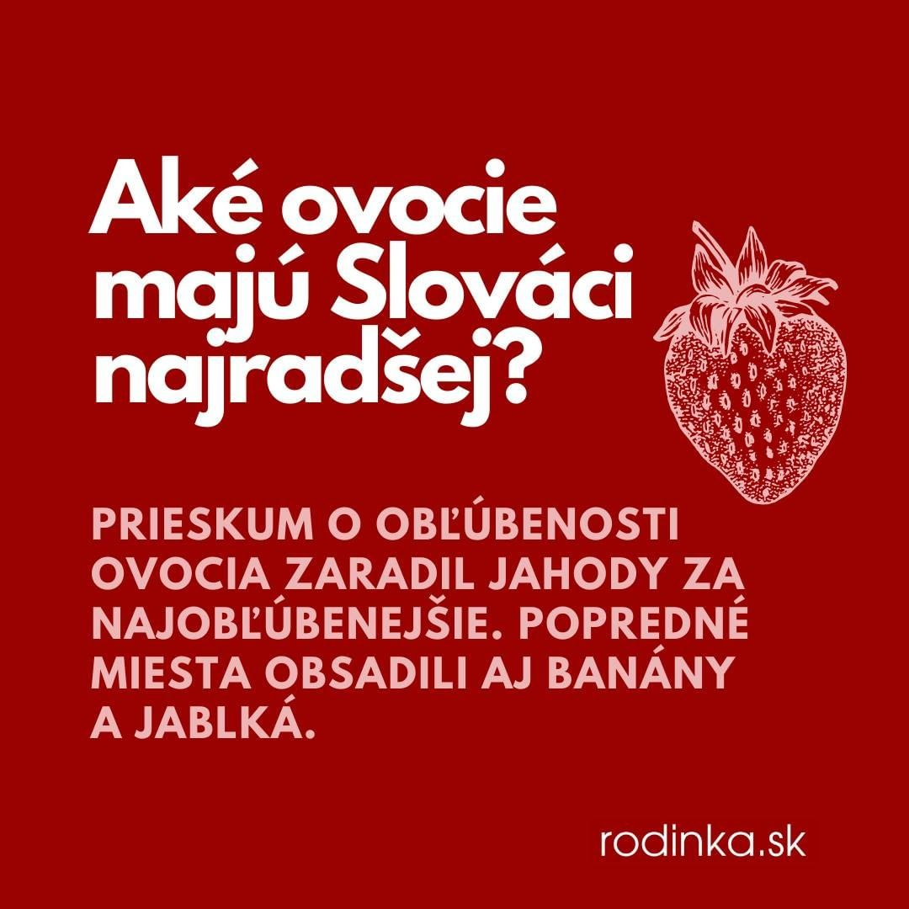

Ovocie podľa @rodinka.sk — Normy Jedál
Prieskumy o obľúbenosti ovocia Slovákov sú zaujímavé. Možno sa odpovede líšia aj od sezóny. Premýšľate, akému ovociu by dala prvé miesto vaša rodina?🍎🍐🍒🥭🍉
Viac si prečítate na rodinka.sk
🚩článok: Naučíme vás pre rodinu vybrať najchutnejšie ovocie a zeleninu
•
•
•
•
•
#slovensko #slovakia #slovak #instaslovak #ovocie #rodinka #dnesjem #zelenina #zdravie #krása #torta #deticky #jahody #zdravejedlo #jedlojelaska #instaczech #cokolada #dnespeciem #instaslovakia #jedlo #bratislava #igersczechrepublic #ranajky #zdravie #cze #mnam #slovakian #jahody #raňajky #rodina